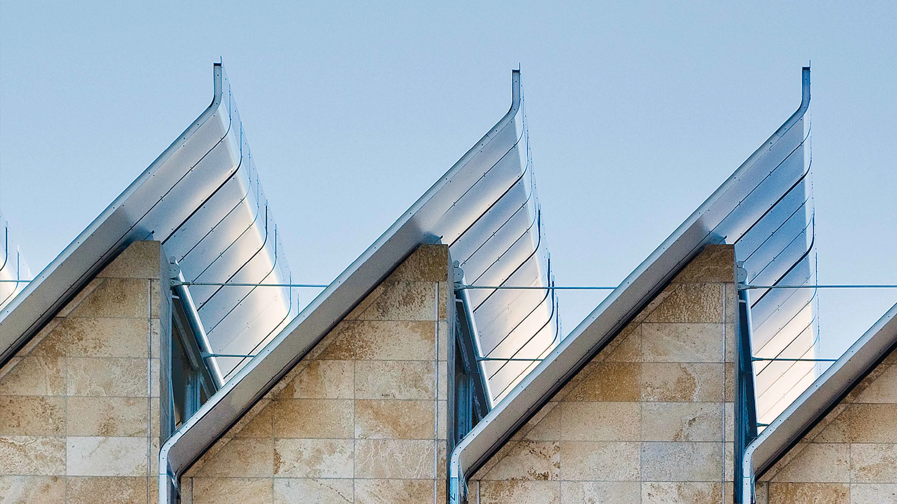

PAVILLON RESNICK
L'HISTOIRE
L'histoire du Pavillon Resnick commence avec l'architecte Renzo Piano, qui a conçu ce bâtiment emblématique inauguré en 2010. Son objectif était de créer un espace artistique innovant et fonctionnel, capable d'accueillir une vaste collection d'œuvres tout en offrant une expérience immersive pour les visiteurs. Piano a intégré des éléments architecturaux modernes avec une esthétique raffinée, créant ainsi une structure remarquable qui s'intègre harmonieusement au campus du LACMA.
Le Pavillon Resnick est devenu un pivot culturel et artistique de la ville de Los Angeles. Il abrite une collection diversifiée d'œuvres d'art, des expositions temporaires et des événements culturels, attirant des visiteurs du monde entier. Son design innovant et fonctionnel offre un cadre exceptionnel pour l'appréciation de l'art et stimule le dialogue entre les visiteurs et les œuvres exposées, créant ainsi une expérience enrichissante et immersive.
L'héritage du Pavillon Resnick réside dans sa contribution à l'excellence architecturale de Los Angeles. La structure, élégante et contemporaine, témoigne de l'engagement continu de la ville envers l'art et la culture. En tant que centre d'exposition de renommée mondiale, le Pavillon Resnick continue d'être un catalyseur de l'appréciation artistique et de l'innovation architecturale au cœur de la cité des anges.
INFUENCE DE PIANO
L'influence de Renzo Piano sur le Pavillon Resnick se reflète dans sa conception à la fois fonctionnelle et esthétique. Piano a conçu un espace qui combine habilement la fonctionnalité avec une esthétique soignée. La structure du pavillon intègre des matériaux modernes et des formes architecturales épurées, offrant ainsi un cadre idéal pour l'exposition d'œuvres d'art variées.
Une autre marque de l'influence de Renzo Piano réside dans son engagement à intégrer harmonieusement le Pavillon Resnick au paysage environnant du LACMA. L'architecte a créé une structure qui s'intègre au campus existant, ajoutant une esthétique contemporaine sans perturber l'harmonie visuelle globale du musée.
Piano a également influencé l'expérience visuelle des visiteurs à travers la conception du Pavillon Resnick. Les espaces intérieurs, avec leur lumière naturelle abondante et leur disposition artistique, offrent une expérience immersive où les visiteurs peuvent interagir avec les œuvres exposées de manière organique et engageante.
DÉCOUVRIR
Si l’article vous a plu, n’hésitez pas à lire celui sur le Centro Botin, une autre grande œuvre de Piano.